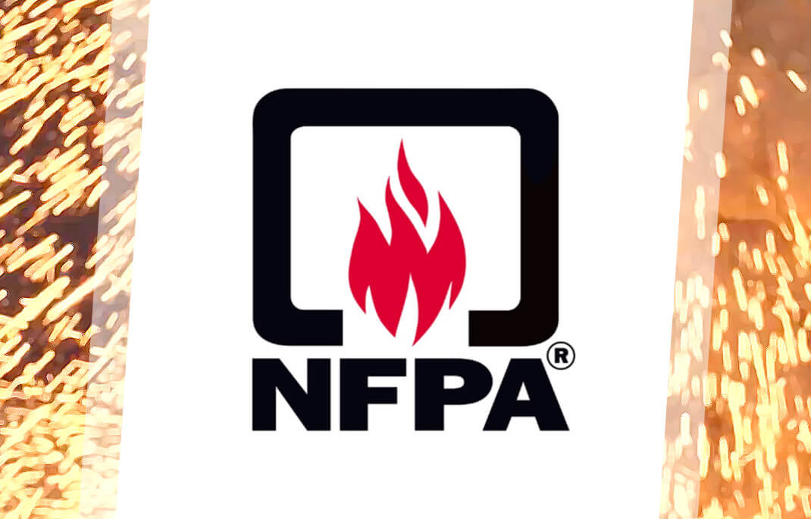

¿Que es NFPA?
Asociacion nacional de proteccion contra incendios (NFPA, National Fire Protection Association).
Es una organizacion creada en EEUU, encargada de crear y mantener las normas y requisitos mínimos para la prevención contra incendio, capacitación, instalacion y uso de medios de proteccion contra incendio, utilizados tanto por bomberos, como por personal encargado de la seguridad. Sus estandares recomiendan las prácticas seguras desarrolladas por personal experto en el control de incendios.